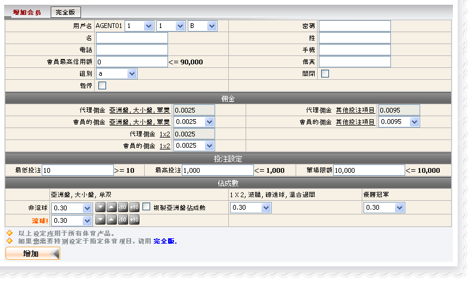
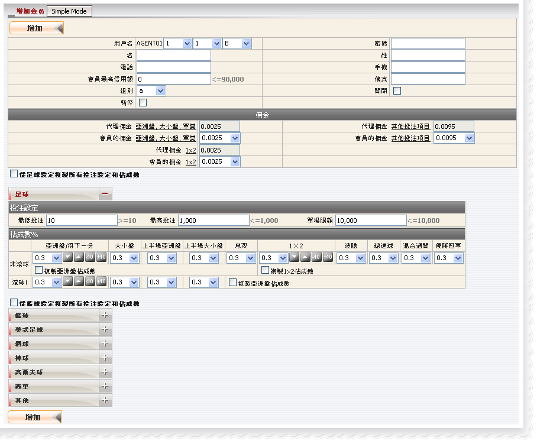
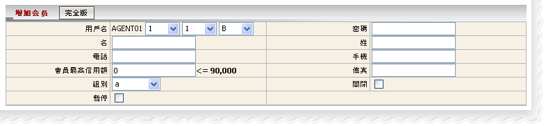
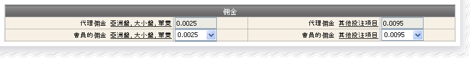
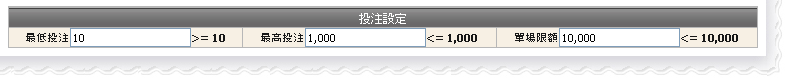
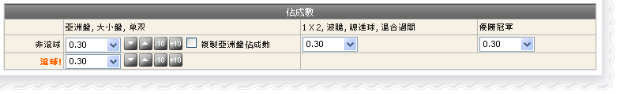

賽馬
定義:
這個功能讓代理新增一個會員, 然後編輯其佣金, 投注設定及對該會員的佔成數

如何?
為了實現創建一個新的會員, 您必須填寫:會員資料登記
這是填寫會員的所需的資料。在這個形式中, 以下幾點值得關注:
佣金設置
這是為了設定會員折扣, 只需從下拉列表中選取一個折扣值, 記得會員折扣不能大於代理折扣
用詞註解:
投注設定
此設定將限制會員投注金額, 若違反規定那麼警告信息將出現通知會員。必須注意的是最低投注< 最高投注< 單場限額
定義:
备注: 不同条目/队名将被视为另一场赛事。
例如, 以下赛事都将被视为不同的赛事或个别的项目
a) 西班牙 (中 ) -vs- 荷兰 [2010 FIFA南非世界杯 ]
b) 西班牙 00:00-15:00 -vs- 荷兰 00:00-15:00 [2010 FIFA南非世界杯 - 特定 15 分钟大小]
c) 西班牙 15:01-30:00 -vs- 荷兰 15:01-30:00 [2010 FIFA南非世界杯 - 特定 15 分钟大小]
即使联赛名称相同, 但由于不同的队伍名称, 上述条件仍然适用
佔成數設定
這個設定將決定您對會員投注額的輸贏數額。我們可以在完全模式內定義不同的設置於個別運動類別
更新賽馬的設置
會員必須被啟動賽馬方能對賽馬進行投注
更新娛樂城的設置
會員必須被啟動娛樂城方能進行娛樂城遊戲

用詞註解:
注: 累計轉移金額 = 最高調動信用額 + 今日輸贏